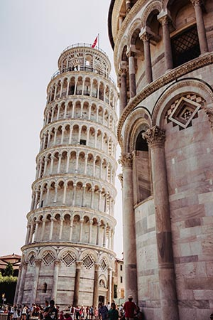
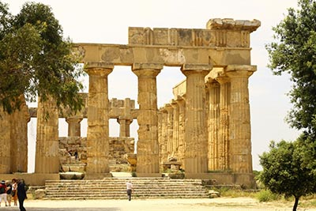
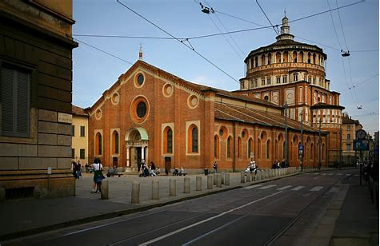
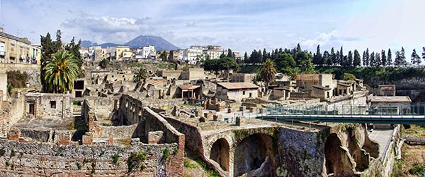
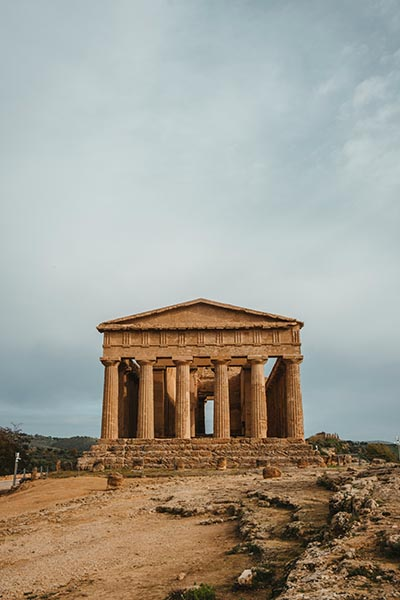
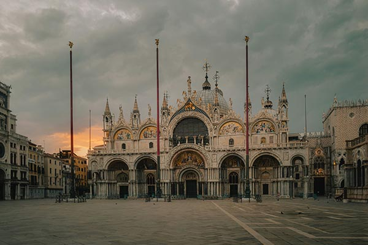
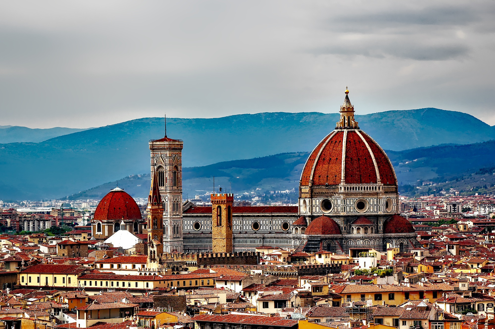
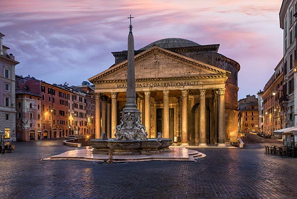
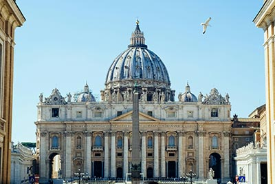

Square of Miracles, Pisa

Temple of Hera, Campania

Church of Santa Maria Delle Grazie, Milan

Herculaneum, Campania

Valley of the Temples, Agrigento

St. Mark's Basilica, Venice

Florence Cathedral, Florence, Tuscany

The Pantheon, Piazza della Rotonda, Rome

St. Peter's Basilica, Vatican City, Rome